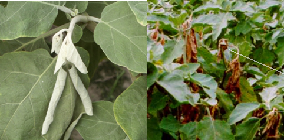
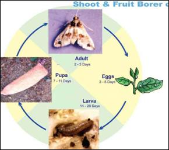
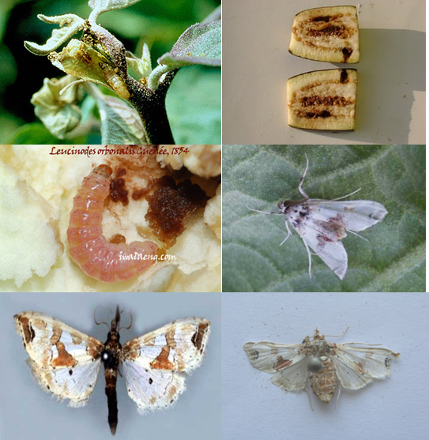
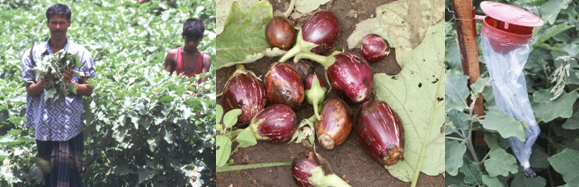

BRINJAL :: MAJOR PESTS :: SHOOT AND FRUIT BORER
1. Shoot and fruit borer: Leucinodes orbonalis (Pyraustidae: Lepidoptera)
Distribution and status
India, Bangladesh, Malaysia, Thailand, Burma, Srilanka, Laos, South Africa, Congo. It is a major and regular pest of brinjal causing damage to even 30 -50% of fruits or more.
Host range
Brinjal, potato, other wild plants belonging to solanaceae, peas.
Damage symptoms
Larva bores into tender shoots and causes withering of terminal shoots / dead hearts - also bores petioles of leaves, flower buds and developing buds, causes withering of leaves, shedding of buds and make fruits unfit for consumption. Attacked fruits are with boreholes plugged with excreta. Fruits become out of shape also.
|  |
|---|
Bionomics
Egg period: 3-4 days. About 150-350 creamy white eggs laid singly on leaves, tender shoots, flowers and developing fruits. Larva is stout, pink coloured with sparsely distributed hairs on warts on the body and brownish head. Larval period 15 days - 5 instars. Pupa: 6-8 days in tough greyish cocoon on plant itself, boat shaped cocoon. Medium sized adult with white wings, flashed with triangular brown and red markings on forewing. Total life cycle: 17-50 days.
|  |
|---|
|  |
|---|
ETL: 1-5% of fruit damage.
Management
- Avoid continuous cropping of brinjal and ratooning.
- Grow resistance varieties like Annamalai, Pusa purple round, Arka Kusumakar, Doli - 5. Chaklasi Doli, Pusa purple Long, Pusa Purple Round, SM 67, SM 68, Pant Samrat
- Collect and destroy the damaged tender shoots, fallen fruits and fruits with bore holes to prevent population buildup
- Use light traps @ 1/ha to attract and kill the moths.
- Release egg parasitoids Trichogramma chilonis @1.0 lakh/ha.
- Spray Bt formulations of B. thuringiensis var. kurstaki such as Dipel @ 1.5 to 2 ml /L of water.
- Spray any one of the insecticide starting from one month after planting at 15 days interval. Carbaryl 50 WP 2 kg + wettable sulphur 50 WP 2 kg, endosulfan 35 EC 1.5 L + Neem oil 1.5 L, Quinalphos 25 EC 1.5 L + Neem oil 1.0 L, NSKE 5%, Azadirachtin 1.0% 1.0-1.5 L or Fenpropathrin 30 EC 250-340 ml or Thiodicarb 75 WP 625-1000 g Flubendiamide 20 WG, 375 g with 500 – 750 L water/ha
- Avoid using synthetic pyrethroids as they cause resurgence of sucking pests.
- Avoid using insecticide at the time of fruit maturation and harvest.
- Uproot and burn old plants before planting new plants since they harbour pest and carry over infestation
|  | ||
|---|---|---|
| Remove infested shoots by hand | Remove and bury infested fruits | Light traps |